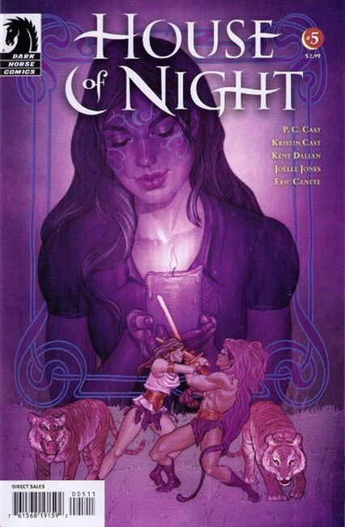

Until recently, Zoey Redbird was an average high-school student worrying about grades, boys, and breakouts. But priorities have a way of changing when you are marked as a vampyre, enroll in the vampyre academy House of Night, and have to figure out a whole new social hierarchy, affinities for elemental magic, and physiological changes that make you crave blood.
Struggling to understand her connection to the vampyre goddess Nyx and her elemental affinities, Zoey Redbird's got her hands full at the House of Night. Add needing a plan to revamp the student group known as the Dark Daughters, and this third-former vampyre's in need of a hand. Turning to her friends, Zoey hopes to gain clarity in her quest to understand where she fits into the modern world of vampyrism.
Zoey Redbird and her friends investigate a tale from ancient Greece in their quest through the pages of vampyre history. As the House of Night confronts protests from religious zealots, Zoey hopes that Circe's famous Full Moon Ritual and her romance with the legendary traveler Odysseus will help her understand her elemental affinity for water and the mysteries she's encountered as a fledgling vampyre.
Having gained a new understanding of her affinities for earth, wind, and water, Zoey Redbird moves into more dangerous territory as she attempts to master a lesson in fire. Zoey seeks guidance from the secret vampyre history of Cleopatra and her relationships with two great Roman leaders-Julius Caesar and Mark Antony. Readers gain knowledge about Zoey's maturation as a fledgling vamp as she becomes the leader of the Dark Daughters.

A tale of heated passion and deadly heartbreak starring warriors Hippolyte and Herkales forms the backdrop for Zoey Redbird's fifth and final lesson from the goddess Nyx. It's now time for Zoey to take all she's learned and make an inevitably controversial decision on how to lead the popular student group known as the Dark Daughters.